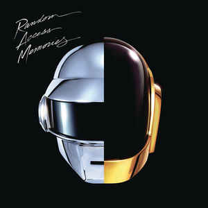
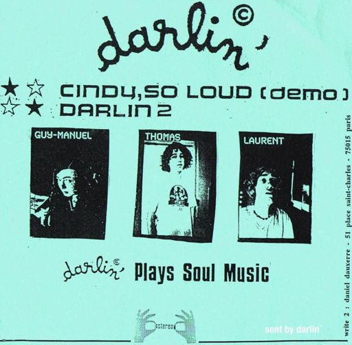
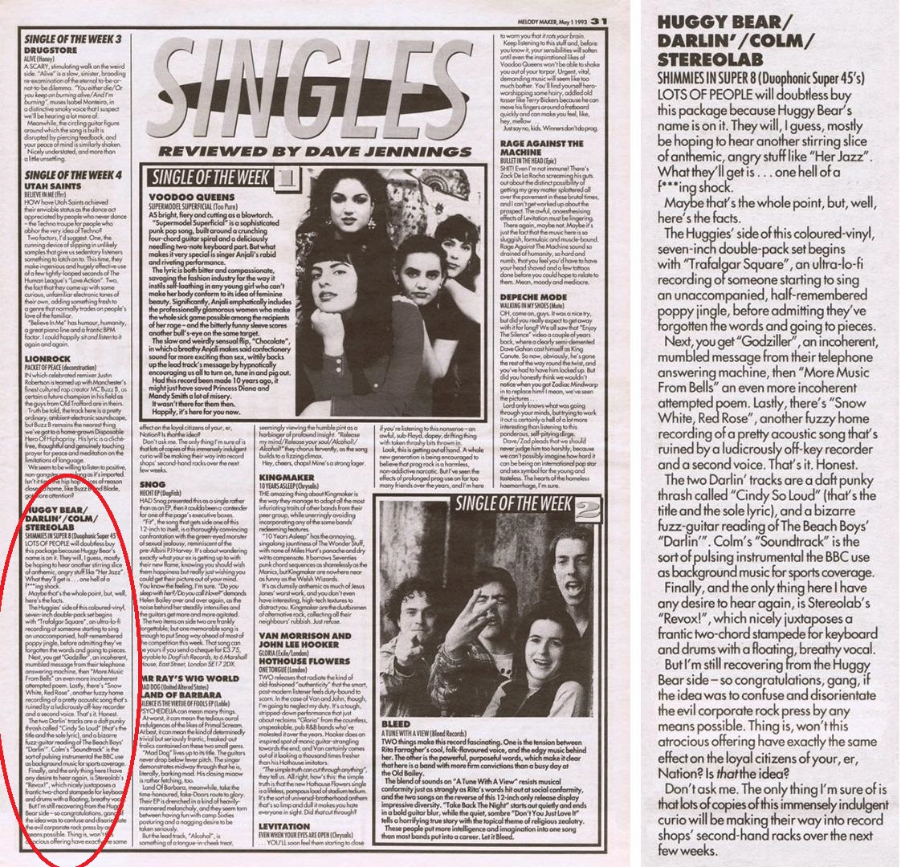
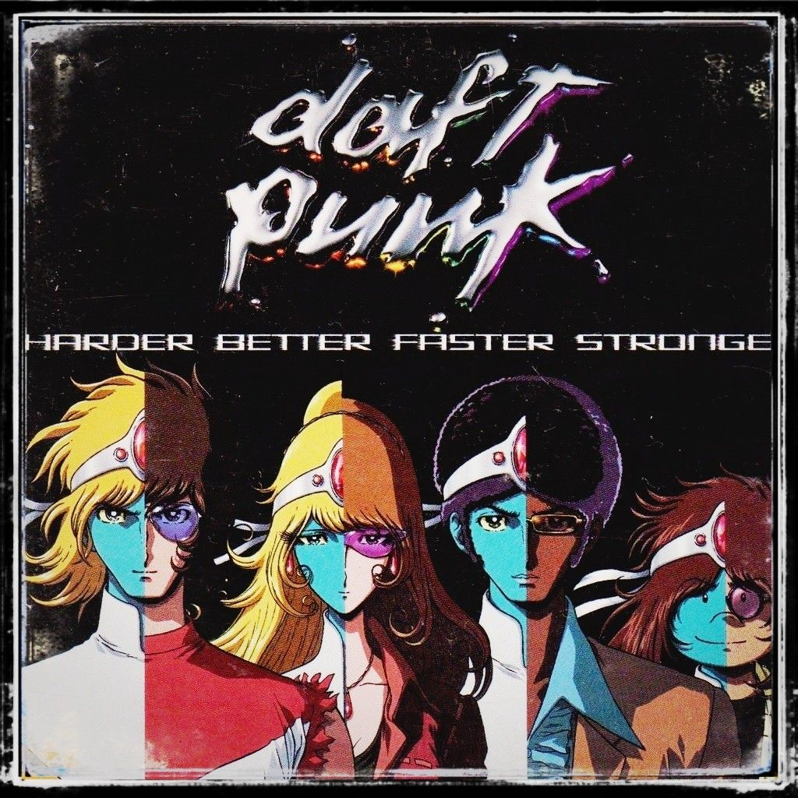
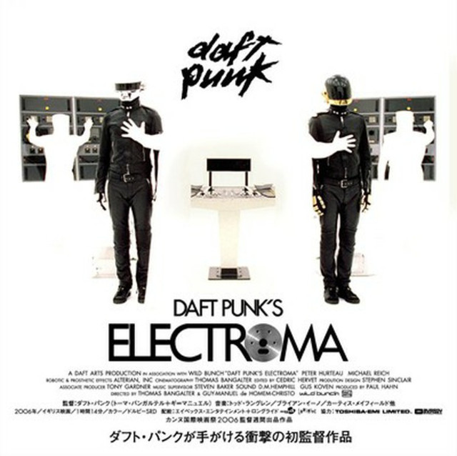
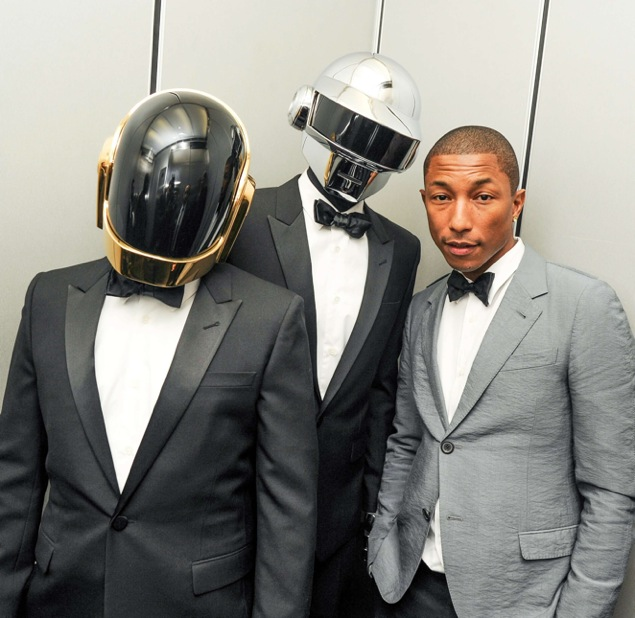
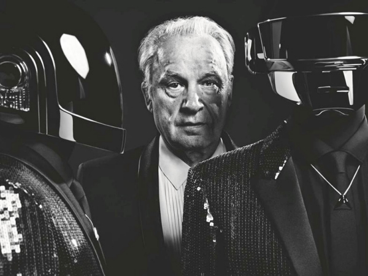
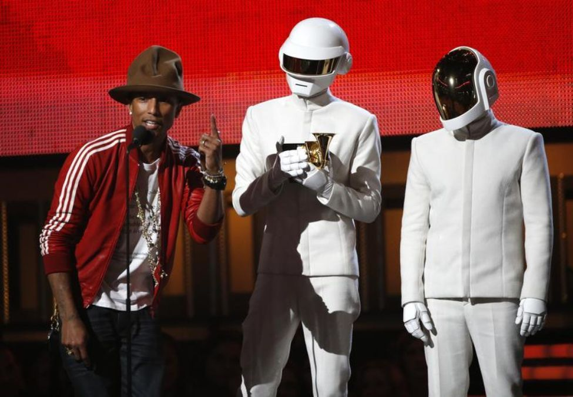

Daft Punk es un dúo formado por los músicos franceses Guy-Manuel de
Homem-Christo y Thomas Bangalter. Ellos alcanzaron una gran popularidad en el estilo
house a mediados de la década de los años 1990 en Francia y continuó con su éxito los años
siguientes, usando el estilo synthpop. El dúo también es acreditado por la producción de
canciones que se consideran esenciales en el estilo french house.
Primeros años (1987-1993)
Era Homework (1993-1999)
Era Discovery (1999-2003)
Era Human After All (2004-2008)
Era Tron: Legacy (2008-2010)

Era Random Access Memories (2013)
Equipo
Contactanos
Primeros años (1987-1993)
Thomas Bangalter y Guy-Manuel de Homem-Christo se conocieron en Lycée
Carnot, una escuela
secundaria en París. Los dos se hicieron buenos amigos y decidieron en 1992, iniciar una
banda
basada en la guitarra, llamada "Darlin" en compañía de Laurent Brancowitz. Bangalter y
Homem-Christo tocaban bajo y guitarra, respectivamente, y Brancowitz tocaba los tambores.
El nombre del trío provenía de la canción de The Beach Boys, del mismo nombre, la cual grabaron
junto con una composición original, y fue lanzada en un EP de Duophonic Records
multiartista.

Una reseña negativa por parte de la revista Melody Maker, describió a las canciones de la
banda
como "daft punky thrash" (Loca basura punk) . Pero en vez de ignorar dicha
reseña, los cantantes la encontraron interesante y, de hecho, de ella surgió su nombre Daft
Punk. Homen-Christo comentó: "Nos esforzamos demasiado en encontrar el nombre 'Darlin', y
esto pasó tan rápido". "Darlin" se disolvió después de lo sucedido, por lo que Brancowitz
tomó la
oportunidad de estar con Phoenix. Mientras tanto Bangalter y Homem-Christo formaron Daft
Punk y empezaron a experimentar con cajas de ritmos y con sintetizadores.

Era Homework (1993-1999)
En 1993, Daft Punk acudió a una rave en el Centro Pompidou, en donde
conocieron a Stuart Macmillan, integrante de la banda "Slam" y cofundador de la discográfica
Soma Records Quality Recordings. La demo que le dieron a forma al debut de Daft Punk con
el sencillo "The New Wave", el cual tuvo una publicación limitada en 1994. El sencillo
también contenía la versión final de "The New Wave" llamada "Alive", el cual se introdujo
también en su primer álbum.
Daft Punk regresó al estudio en mayo de 1995 para grabar "Da Funk". Se convirtió en su
primer éxito comercial ese mismo año. Tras el éxito de "Da Funk", Daft Punk decidió buscar
un representante. Finalmente terminaron contratando a Pedro Winter, que regularmente
promocionaba a Daft Punk y a otros artistas en sus clubes nocturnos. La banda luego firmó
con Virgin Records en septiembre de 1996 y realizaron un acuerdo en el que daban licencia a
la compañía de producción, Daft Trax.
"Da Funk" y "Alive" fueron incluidos en su álbum debut, Homework. El álbum contiene géneros
de música como: techno, house, acid house y diferentes estilos de electro, y también es un
álbum reconocido por ser una de las influencias más grandes en el estilo del house de los
90. "Da Funk" fue incluida en la banda sonora de la película The Saint. El sencillo más
famoso de Homework fue "Around the World", la cual es reconocida por repetir el título de la
canción una y otra vez. Daft Punk también produjo una serie de vídeos musicales dirigidos
por Spike Jonze, Michel Gondry, Roman Coppola y Seb Janiak. La colección de videos fue
lanzada en 1999 titulada D.A.F.T.: A Story About Dogs, Androids, Firemen and Tomatoes.
Era Discovery (1999-2003)
En 1999, el dúo comenzó la producción de su segundo álbum, que había
comenzado un año antes. En 2001, el álbum Discovery fue lanzado, orientado en un estilo
synthpop, lo que inicialmente sorprendió a muchos fanes de Homework. El grupo comentó que
querían reconectar las actitudes que tenían desde niños. Esto los llevó a usar muestras
de canciones de los 70 y los 80.
El álbum llegó al nº 2 en el Reino Unido y el sencillo "One
More Time" fue un gran éxito en los clubes, casi llegando al primer lugar del UK Singles
Chart. El álbum también es reconocido por el excesivo uso del auto-tune. Este álbum creó
una nueva generación de fanes. Los sencillos "Digital Love" y "Harder, Better, Faster,
Stronger" también fueron un gran éxito en el Reino Unido y los Estados Unidos, y "Face to
Face" alcanzó la posición nº 1 en los clubes, aunque tuvo una publicación limitada.

Una grabación de 45 minutos tomada de un concierto en Birmingham de 1997, pero lanzada en 2001
con el nombre Alive 1997. En 2003, lanzaron la película animada Interstella 5555 - The 5tory
of the 5ecret 5tar 5ystem. Daft Punk produjo la película bajo la supervisión de Leiji
Matsumoto, al cual, los integrantes del grupo, se refieren como el héroe de sus
infancias. El álbum Daft Club fue lanzado para promocionar el filme. Contiene mezclas del
álbum Discovery, este fue solo lanzado por internet por un tiempo limitado.
Desde 1996 hasta 2008 su representante fue Pedro Winter (Busy P) el jefe de Ed Banger
Records.
Era Human After All (2004-2008)
Empezando el 13 de septiembre y terminando el 9 de noviembre de 2004, Daft
Punk dedicó seis semanas para la creación de un nuevo material. El dúo lanzó el álbum "Human
After All" en marzo de 2005. Las críticas fueron mixtas, sobre todo citando a su repetitivo
carácter y aparentemente por la corta dedicación al grabado del álbum. Los sencillos
extraídos de este álbum fueron "Robot Rock", "Technologic", "Human After All", "The Prime
Time of Your Life" y "The Brainwasher". La declaración oficial de Daft Punk sobre el álbum
fue: "Creemos que Human After All habla por sí mismo".
Una antología de Daft Punk de un formato de CD/DVD titulado Musique Vol. 1 1993–2005 fue
lanzado el 4 de abril de 2006. Contiene nuevos vídeos musicales para "The Prime Time of Your
Life" y "Robot Rock (Maximum Overdrive)". Daft Punk también lanzó un álbum remix de Human
After All titulado Human After All: Remixes. Una edición limitada incluía dos muñecos
miniatura de Daft Punk como robots.
El 21 de mayo de 2006, Daft Punk estrenó su primera película Daft Punk's Electroma en el
Festival de Cannes.20 La película no incluye su propia música, teniendo en cuenta su
anterior DVD y el estreno de la película (D.A.F.T. para Homework e Interstella 5555 para
Discovery). Proyecciones de medianoche de la película se mostraron en los cines de París a
partir de finales de marzo de 2007. Comentarios del público han sido positivos.

Daft Punk llevó a cabo una de las giras mundiales más ambiciosas en la historia de la música
electrónica, empezando en mayo de 2006 en el Festival de Coachella, en Estados Unidos.
Debido al éxito que cosechó, el dúo decidió continuar con esta serie de conciertos por todo
el mundo. Más tarde, lanzó su segundo álbum en vivo titulado Alive 2007 el 19 de noviembre
de 2007, con todas las pistas grabadas en su concierto en París, el 14 de junio de ese mismo
año. Contiene la presentación del dúo en París de su tour Alive 2007 La versión en vivo
de "Harder, Better, Faster, Stronger" fue lanzada como un sencillo." Un video musical para
el sencillo dirigido por Olivier Gondry contiene grabaciones hechas por 250 personas
audiencia de la presentación hecha en Brooklyn en el Parque KeySpan, Coney Island.
Daft Punk empezó con su primera colaboración en 2007 con Kanye West haciendo como uno de los
sencillos del álbum "Graduation", la cual la canción se llama Stronger, después ganaron un
premio Grammy en 2008, haciendo una aparición en el escenario de los Grammys con el cantante
West en una pirámide del Alive 2007. Más tarde Daft Punk se empezó a conocer en Estados
Unidos de América, Canadá y poco en México.
Era Tron: Legacy (2008-2010)
Después del tour "Alive 2007", Daft Punk se enfocó en nuevos proyectos. En
una entrevista dada en 2008, Pedro Winter reveló que el dúo regresó a su estudio en París
para trabajar en un nuevo material. Pedro también anunció su renuncia de ser el
representante del dúo, para enfocarse en su discográfica Ed Banger Records y en su trabajo
como Busy P. En otra entrevista, Pedro indicó que el dúo estaba trabajando con una
compañía no específica de Los Ángeles. En 2008, Daft Punk fue ubicado en la posición 38
en una encuesta mundial realizada por la revista DJ Magazine, después de que, un año antes
fueron ubicados en la posición 71. El 8 de febrero de 2009, Daft Punk ganó dos Grammy por
su álbum Alive 2007 y su sencillo "Harder, Better, Faster, Stronger".
Daft Punk ofreció once mezclas utilizando su propia música para el videojuego, DJ Hero de
Activision. También aparecen en el juego, junto con su propio escenario. El dúo aparece con
sus cascos de la era Discovery junto con sus trajes de cuero de la era Human After All.
Estas funciones estuvieron ausentes en la secuela, DJ Hero 2, aunque para esta ofrecieron un
remix de su canción "Human After All".
"TRON: Legacy" de Disney.
En la Convención Internacional de Cómics de San Diego de 2009, se anunció que el dúo había
compuesto 37 canciones para la película Tron: Legacy de The Walt Disney Company. La
orquesta fue conducida por Joseph Trapanese. La banda colaboró con él durante dos años
para la partitura, desde la preproducción hasta su finalización. La partitura contiene una
orquesta de 85 piezas, grabado en AIR Lyndhurst Studios, en Londres. El director de Tron:
Legacy, Joseph Kosinski, se refirió a la banda sonora como una mezcla de orquesta y
elementos electrónicos. Daft Punk hace un cameo en la película como programas de discs
jockeys con sus cascos. La protagonista de la película Tron: Legacy, Olivia Wilde, comentó
que el dúo posiblemente esté involucrado en eventos futuros relacionados con la
película. Un tráiler de la película muestra a Daft Punk y su canción "Derezzed". La
banda sonora de la película fue publicada el 6 de diciembre de 2010.35 Una edición especial
de 2 discos contiene un póster del dúo de la película. Canciones adicionales del álbum se
pueden encontrar en tiendas en línea. Un vídeo musical de la canción "Derezzed" se estrenó
en MTV Networks el mismo día en el que el álbum fue lanzado. El vídeo está disponible a
la venta en iTunes. Walt Disney Studios lanzó un álbum que contiene mezclas del álbum,
titulado Tron: Legacy Reconfigured el 5 de abril de 2011.
En 2010, Daft Punk fueron admitidos en la Orden de las Artes y las Letras, una orden de
Francia. Bangalter y de Homem-Christo fueron premiados individualmente con el rango
Chevalier (caballero).
Soma Records anunció que lanzó una pista anteriormente sin publicar de Daft Punk de sus
sesiones de Homework titulada "Drive". La pista fue incluida en la compilación del 20°
aniversario de Soma. Según Soma, "Drive" fue enviada con "Rollin' & Scratchin'", pero Soma
pidió que terminaran y enviaran "Da Funk" para acompañar a "Rollin' & Scratchin'", mientras
que "Drive" se guardaría para una fecha posterior.
Era Random Access Memories (2013)
Daft Punk comenzó a trabajar en su cuarto álbum de estudio, con la
colaboración del cantante y compositor Pharrell Williams y con contribuciones con el líder
de Chic, Nile Rodgers. Williams confirmó sus colaboraciones en dos entrevistas
diferentes. Durante una entrevista con Rodgers, afirmó que se reunió con el dúo para
discutir lo que iba a ser su próximo álbum, también mencionó que el disco iba a salir a
mediados de ese año, iniciando este proyecto entre 2010 y 2011.

Después, en mayo de 2012, Giorgio Moroder colaboró con este álbum, grabando un monólogo
acerca de su vida en una cabina de voz que contiene micrófonos que van desde 1960 hasta
nuestros días (a raíz de esto surgió la canción "Giorgio By Moroder"). Cuando se le preguntó
acerca de esto, el ingeniero respondió que cada micrófono se utiliza para representar las
diferentes décadas de la vida de Moroder en su monólogo. Rodgers también estuvo presente
durante la sesión de grabación. Chilly Gonzales indicó un día que tenía material musical
para el proyecto del dúo en un día de sesiones ("Within").

En octubre de 2012, Daft Punk ofreció un remix de 15 minutos de algunas canciones del
cantante de blues Nathan East para la casa de moda de Yves Saint Laurent, propiedad de Heidi
Slimane, y más tarde la revista DJ Magazine posicionó al dúo en el #44 de la "Lista de los
100 mejores DJ's del año".
En noviembre de 2012, Nathan East también en una entrevista reiteró que estaba trabajando
con el dúo en la elaboración del proyecto del álbum.
En noviembre de 2012, Nathan East también en una entrevista reiteró que estaba trabajando
con el dúo en la elaboración del proyecto del álbum.
En febrero de 2013, confirmaron su regreso a la música, bajo el sello de Columbia
Records.
Desde el 23 de marzo, en iTunes Store se reveló el nombre de este nuevo álbum de estudio por
fin llamado Random Access Memories, iniciando los pedidos anticipados, afirmando que el
lanzamiento tendría lugar el 21 de mayo. El 19 de abril del mismo año, se da a conocer el
primer sencillo del mismo, "Get Lucky", con la participación de Pharrell Williams como voz
principal de la canción y Nile Rodgers como el guitarrista.
Finalmente, Random Access Memories se filtró el 13 de mayo de 2013 por Internet, ocho días
antes de su lanzamiento oficial. En respuesta, dos horas más tarde el grupo habilitó la
escucha de manera gratuita en iTunes Store.
"Get Lucky" comienza a sonar en muchas emisoras a nivel mundial, elevando así la popularidad
del dúo, lo cual hizo que se catapultaran al puesto #22 en el ranking realizado por la
revista DJmag con fecha de salida el día 19 de octubre de 2013. Igualmente, Get Lucky fue
nominada como mejor grabación del año y resultando como ganadora en los Premios Grammy de
2014. Además, en dicho evento, Daft Punk interpretó este tema junto al cantante de talla
internacional Stevie Wonder, así como con Pharrell Williams, Nile Rodgers, Nathan East y
Omar Hakim, en un arreglo específico sólo para la gala. En esta misma ceremonia Daft Punk se
hicieron acreedores a otros cuatro premios más: álbum del año, mejor álbum de
dance/electrónica, mejor ingeniería de álbum (no clásica) y mejor interpretación pop de dúo
o grupo.

El 10 de marzo de 2014, la canción de Daft Punk "Computerized" apareció en internet. La
canción cuenta con Jay-Z y parece incluir samples de "The Son of Flynn" para la banda sonora
de Tron: Legacy.
El 7 de octubre de 2014, salió en Youtube el vídeo "Gust of Wind", del cantante Pharrell
Williams con la colaboración de Daft Punk, aunque en el vídeo solo se pueden apreciar sus
cascos y, al final, una animación su silueta